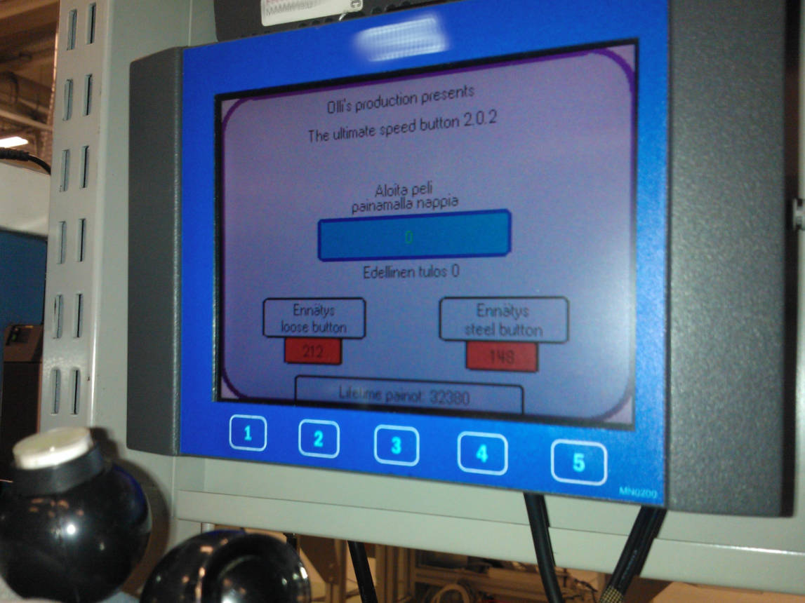

Kotiverkon suunnittelu ja toteutus
Muutimme 2021 vuotena uuteen paritaloon, jossa joka huoneeseen kuuluu CAT6-sisäverkkokaapelointi.
Päätin oppimistarkoituksessa toteuttaa kotiverkkolaitteiston järeämmällä ratkaisulla aiempien
modeemi/reititi/wlan -all-in-one ratkaisujen tilalle.
Lähtökohtana oli, että kaikki mahdolliset kytketään ensisijaisesti kaapelilla ja loput kytkeytyvät wlaniin.
Lisäksi henkilökohtaiset laitteet on eriytetty omaan suojattuun VLAN-ryhmään
ja "kaupalliset" internettiä käyttävät laitteet ovat omassa VLAN-ryhmässä.
Reitittimeksi valikoitui Ubiquitin EdgeRouter X-SFP monipuolisuuden ja edullisen hinnan puolesta,
wlan-tukiasemaksi saman valmistajan UAP-AC-Lite joka saa myös sähkönsä ethernet-johdoa pitkin.
Lisää asiasta blogissani.
Raspberry Pi ja Linux
Tutustuin Raspberry-tietokoneeseen sen ensimmäisen version aikaan 2012 vuonna.
Tämän johdosta tutustuin myös linuxiin enemmän ja päädyin käyttämään sitä myös kotitietokoneella
pääasiallisena käyttöjärjestelmänä. Tästä on kulunut aikaa jo yli 10-vuotta
ja linux on edelleen pääasiallinen käyttöjärjestelmäni, jolla täyttyy nykypäivänä
erinomaisesti normaalit kotikäyttötarpeet ja enemmänkin.
Raspberrylle olen ohjelmoinut pythonilla lämpötilanluku-ohjelman käyttäen
DS1820 lämpötila-antureita 1-wire -väylässä.
Projekti löytyy github-palvelusta: rpi-temp-logger
Ohjelmointi
Ohjelmointiharrastuksen olen aloittanut Visual Basic:llä yläaste-aikoina 800-sivuista opusta lukemalla
ja jatkanut ammattikoulussa C-kieleen Atmelin AVR/Arduino -laitteiden kanssa.
Viimevuosina olen ohjelmoinut Codesys-ympäristössä (lasten)polkuauton sähköistyksen,
tyco-sähköautoradan ajanottojärjestelmän sekä nappipelin. Oli mielenkiintoista
tutustua silloisen työnantajan tuotteisiin myös tuotteen käyttäjän näkökulmasta.
Lisäksi olen käyttänyt python-kieltä jo mainitussa raspberryn tapauksessa ja avoimen JAMK:n ohjelmointikurssilla.

Blogi
Täydentelen aika-ajoin myös omaa blogia, Elektroniikkaa ja tietotekniikkaa, josta löytyy enemmän omia kokemuksiani ja näperryksiä matkan varreltani.


{kind=link}
{kind=link}
{kind=link}